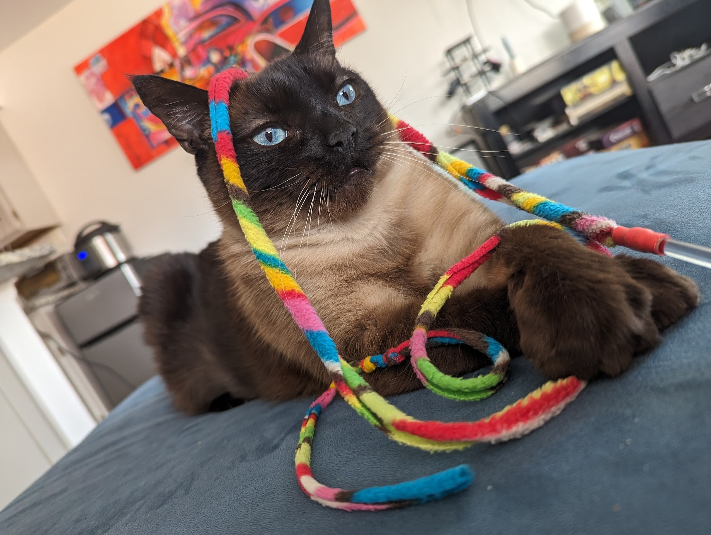

Welcome!
What is this website?
¯\_(ツ)_/¯ idk! Right now its just a way for me to explore web development. I might show off my projects, or maybe have a fake email you can scrape. Or maybe it's just a place to hide a bunch of dumb jokes! Who knows!
Anyway here's a picture of my face.
and a picture of my cat since you have been so kind to give me your attention
About me: I'm a Google SWE. MN -> Boulder. The rest.
![Imagine being able to see memes. This one is a statment
about the purpose of this website. It's a meta commentary on the
nature of professional websites and the sterile curation that
goes into them. I hope it adds a sense of genuinity to my website
to include. It's the shaq sleeping meme where the top half is the
caption 'building a website to convey a curated professional
appearance' with shaq sleeping and it says I sleep. The bottom
half has the caption 'bottom text' indicating the nature of the
meme can be gleaned from the top text alone, and it has a picture
of shaq with his eyes glowing and it says 'real shit'. Your welcome](res/imgs/realshit.jpg)